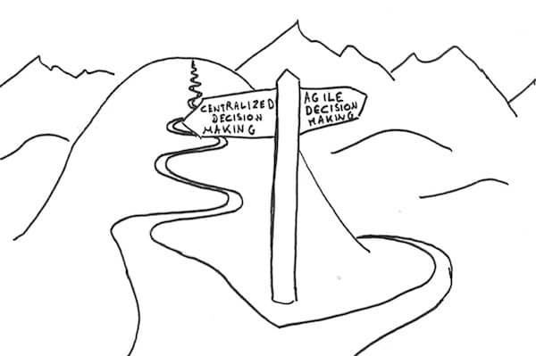

This is the second post in a series about making large organizations more agile. I encourage you to start with the beginning.
Let’s summarize the previous post. I illustrated the typical disappointment with large scale “Agile” transformations. At best they bring a small short term productivity improvement. At worst, they turn into micro-management.
Why doesn’t it work ?
An organization is agile if it is able to respond and take advantage of changes fast. An organization where decisions need to go up and down the ladder will be slow. To thrive in this complex world, everyone needs to be able to take faster and bigger decisions. To do so, people need the good data, but also the right to fail, and the chance to learn new ways of working.

People with the right authority could make data available fast enough. Learning new habits and convincing every one of their right to fail takes time though.
A safe environment
In “Turn the shop around” Navy captain David Marquet explains how he empowered his crew. They would take decisions and inform him with “I intend to …”. Doing that, he also took on him the responsibility of his subordinates errors !
There are always people who put the organization’s interests before theirs. They will try new experiments, even if could backfire in their faces, because it’s the right thing to do. Unfortunately, these people are pretty rare. The vast majority will not try things that would get them troubles. They need a safe environment to unleash autonomy.
The typical adoption technique is to “fake it until you make it”. Apply the practices until the principles and values soak in everyone’s mind. There’s a catch though ! People need great models. People buy-in values, not actions. Think of Apple and other technology brands. People buy Apple hardware because they “Think Different” not for the products ! (Though I admit I love their products too :–))
Although people buy-in values, they measure them through actions. Leaders need to walk their talk for people to trust them.
üí° People buy-in values, but they measure them through actions.
Very often, leaders stick to actions that communicate that it is not ok to fail. Like compensation by objectives for example. Or highlighting the commitment of sprints. Praising overwork is another one !
Place to learn
Real learning comes from experimentation.
üí° ‚ÄúNever help a child with a task at which he feels he can succeed.‚Äù Maria Montessori
This is still true for adults at work. Every time management pushes top-down incentives to speed up change, general understanding suffers. There is a limit to what an organization can withstand before it falls prey to cargo cult.
Leaders must provide a safe environment. They must also provide the conditions for the teams to learn and improve their unique way of working.
Too often, leaders are in a hurry. “Why should we waste our time rediscovering what others have already understood ? Let’s apply Scrum (or SAFe or LeSS) !”
Did you ever learn something by copying the results of others ?
Let’s look at SAFe for example. It’s a collection of proven best practices. That’s only half of the story though. What’s not clear is how a practice is proven to work ? By definition, a team had success with it before adding it to SAFe. It can only be the result of experimentation and learning, as it was not yet part of SAFe !
In the end
Many leaders embark their organization in an Agile transformation for some business benefits. Unfortunately, people often perceive that “It’s just the latest way to squeeze a bit more out of us all !”.
It does not have to be that way. What if they followed massive decentralization of power. What if they made more data available ? What if they adapted the compensation scheme to encourage risk taking. What if they gave authority to their teams to experiment and learn from their own problems. Would people still feel it’s just another re-org ? As a reference, see how unions have been fighting lean manufacturing for decades.
That’s what we’ll look into the next posts. This was part 2 of a series of posts on making large organizations more agile. Further posts will propose what to do.